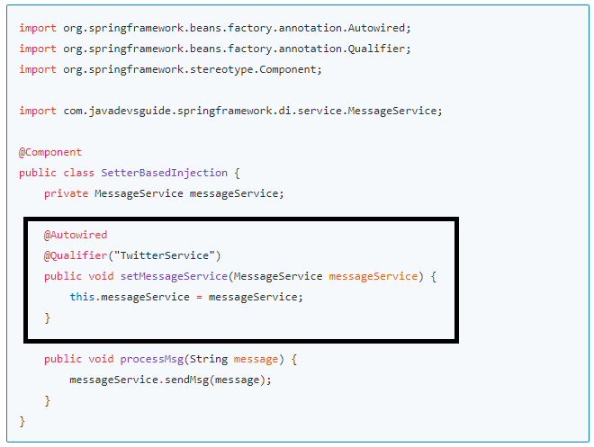

Spring Dependency Injection Tutorial
In this article, we will discuss what is Dependency injection (DI) in Spring and what are the different types of Dependency injection (DI).
Dependency injection (DI) Overview
Dependency injection is a fundamental concept in the Spring framework. It refers to a design pattern where objects are provided with their dependencies rather than creating them internally.
In Spring, Dependency Injection (DI) is achieved through the Inversion of Control (IoC) container. The container manages the creation and lifecycle of objects and injects the required dependencies into the object when it is created.
The DI mechanism is implemented through constructor injection, setter injection, or field injection. Constructor injection involves passing the required dependencies through the constructor of the object. Setter injection involves injecting dependencies through the object's setter methods, and field injection involves injecting dependencies directly into the object's fields.
The advantages of using dependency injection in Spring include increased modularity, flexibility, and testability of the application. By externalizing the configuration of dependencies, it becomes easier to swap out implementations and test individual components in isolation.
Types of Dependency Injection
- Constructor-based dependency injection
- Setter-based dependency injection
- Field-based dependency injection
1. Constructor-based dependency injection
Constructor-based DI is accomplished by the container invoking a constructor with a number of arguments, each representing a dependency.
In the below diagram, the highlighted part shows the Constructor-based dependency injection.

Constructor-based dependency injection example
Let's see the complete example to demonstrate a Constructor-based dependency injection.
As we know, spring java and annotation-based configurations are quite easy to use in spring-based applications so I prefer to use a mix of java and annotation-based spring configurations.
Let's create a spring configuration file using the java class AppConfiguration which is annotated with
@Configuration annotation. This is equivalent to a spring XML configuration file without a
beans definition.
package com.javadevsguide.springframework.di.config;
import org.springframework.context.annotation.ComponentScan;
import org.springframework.context.annotation.Configuration;
@Configuration
@ComponentScan("com.javadevsguide.springframework.di")
public class AppConfiguration {
}
Now, create a MessageService interface and provide more than two
implementations for it.
public interface MessageService {
public void sendMsg(String message);
}
Let's implement the MessageService interface. There are many ways to send a
message like through email, SMS, Twitter, etc.
@Service("EmailService")
public class EmailService implements MessageService{
public void sendMsg(String message) {
System.out.println(message);
}
}
@Service("SMSService")
public class SMSService implements MessageService{
public void sendMsg(String message) {
System.out.println(message);
}
}
@Service("TwitterService")
public class TwitterService implements MessageService{
public void sendMsg(String message) {
System.out.println(message);
}
}
Note that there are multiple implementations for the MessageService
interface so to avoid ambiguity, let's
use @Qualifier annotation.
It's time to demonstrate the usage of Constructor-based dependency injection. To avoid decoupling always use interfaces or abstract base classes as instance variables and constructor arguments.
In this example, we have used the MessageService interface.
import org.springframework.beans.factory.annotation.Autowired;
import org.springframework.beans.factory.annotation.Qualifier;
import org.springframework.stereotype.Component;
import com.javadevsguide.springframework.di.service.MessageService;
@Component
public class ConstructorBasedInjection {
private MessageService messageService;
@Autowired
public ConstructorBasedInjection(@Qualifier("TwitterService")
MessageService messageService) {
super();
this.messageService = messageService;
}
public void processMsg(String message) {
messageService.sendMsg(message);
}
}
We used @Autowired annotation to automatically inject the dependency.
It's time to test the usage of Constructor-based dependency injection.
Let's create an IOC container object that is an ApplicationContext object and
get the beans from it.
import org.springframework.context.ApplicationContext;
import org.springframework.context.annotation.AnnotationConfigApplicationContext;
import com.javadevsguide.springframework.di.config.AppConfiguration;
import com.javadevsguide.springframework.di.constructor.ConstructorBasedInjection;
public class Application {
public static void main(String[] args) {
ApplicationContext applicationContext = new AnnotationConfigApplicationContext(AppConfiguration.class);
ConstructorBasedInjection constructorBasedInjection = applicationContext.getBean(ConstructorBasedInjection.class);
constructorBasedInjection.processMsg("twitter message sending ");
}
}
Note that we have used Spring Java-based configuration that is AppConfiguration class annotated with @Configuration for
configurations.
2. Setter-based dependency injection
Setter-based DI is accomplished by the container calling setter methods on your beans after invoking a no-argument constructor or no-argument static factory method to instantiate your bean.
The following example shows a class that can only be dependency-injected using pure setter injection. This class is conventional Java.
In the below diagram, the highlighted part shows the setter-based dependency injection.
Setter-based dependency injection example
It's time to demonstrate the usage of Setter-based dependency injection.
To avoid decoupling always use interfaces or abstract base classes as instance variables and setter method arguments.
In this example, we have used the MessageService interface.
import org.springframework.beans.factory.annotation.Autowired;
import org.springframework.beans.factory.annotation.Qualifier;
import org.springframework.stereotype.Component;
import com.javadevsguide.springframework.di.service.MessageService;
@Component
public class SetterBasedInjection {
private MessageService messageService;
@Autowired
@Qualifier("TwitterService")
public void setMessageService(MessageService messageService) {
this.messageService = messageService;
}
public void processMsg(String message) {
messageService.sendMsg(message);
}
}
Note that we used @Autowired annotation to automatically inject the dependency using setter
method. Also,
note that there are multiple implementations for the MessageService
interface so to avoid ambiguity, we used
@Qualifier annotation.
It's time to test the usage of setter-based dependency injection. Let's create an IOC container object that
is an ApplicationContext object and get the beans from it.
import org.springframework.context.ApplicationContext;
import org.springframework.context.annotation.AnnotationConfigApplicationContext;
import com.javadevsguide.springframework.di.config.AppConfiguration;
import com.javadevsguide.springframework.di.field.FieldBasedInjection;
public class TestApplication {
public static void main(String[] args) {
ApplicationContext applicationContext = new AnnotationConfigApplicationContext(AppConfiguration.class);
SetterBasedInjection setterBasedInjection = applicationContext.getBean(SetterBasedInjection.class);
setterBasedInjection.processMsg("twitter message sending ");
}
}
Note that we have used AppConfiguration class annotated with @Configuration for configurations.
3. Field-based dependency injection
In the following code snippet, the bean of type FieldBasedInjection has a
field of type MessageService:
import org.springframework.beans.factory.annotation.Autowired;
import org.springframework.beans.factory.annotation.Qualifier;
import org.springframework.stereotype.Component;
import com.javadevsguide.springframework.di.service.MessageService;
@Component
public class FieldBasedInjection {
@Autowired
@Qualifier("TwitterService")
private MessageService messageService;
public void processMsg(String message) {
messageService.sendMsg(message);
}
}
The field is private, but the Spring IoC container does not really care about that; it uses reflection to populate the required dependency.
MessageService
Here is the MessageService interface and its implementation class code:
package com.javadevsguide.springframework.di.service;
public interface MessageService {
public void sendMsg(String message);
}
TwitterService.java
package com.javadevsguide.springframework.di.service;
import org.springframework.stereotype.Service;
@Service("TwitterService")
public class TwitterService implements MessageService {
public void sendMsg(String message) {
System.out.println(message);
}
}
Spring Java Configuration - AppConfiguration.java
Let's create a spring configuration file using the java class AppConfiguration and annotated with
@Configuration annotation.
This is equivalent to the spring XML configuration file without
the beans
definition.
package com.javadevsguide.springframework.di.config;
import org.springframework.context.annotation.ComponentScan;
import org.springframework.context.annotation.Configuration;
@Configuration
@ComponentScan("com.javadevsguide.springframework.di")
public class AppConfiguration {
}
Test Application with ApplicationContext
package com.javadevsguide.springframework.di.test;
import org.springframework.context.ApplicationContext;
import org.springframework.context.annotation.AnnotationConfigApplicationContext;
import com.javadevsguide.springframework.di.config.AppConfiguration;
import com.javadevsguide.springframework.di.field.FieldBasedInjection;
public class TestApplication {
public static void main(String[] args) {
ApplicationContext applicationContext = new AnnotationConfigApplicationContext(AppConfiguration.class);
FieldBasedInjection fieldBasedInjection = applicationContext.getBean(FieldBasedInjection.class);
fieldBasedInjection.processMsg("twitter message sending ");
}
}
Output:
twitter message sending2. Field Injection Drawbacks
There are drawbacks, and this is why using field injection is usually avoided.
- Although it is easy to add dependencies this way, we must be careful not to violate the single responsibility principle. Having more dependencies means more responsibilities for a class, which might lead to the difficulty of separating concerns at the refactoring time. The situation when a class becomes bloated is easier to see when dependencies are set using constructors or setters but are quite well hidden when using field injection.
- The responsibility of injecting dependencies is passed to the container in Spring, but the class should clearly communicate the type of dependencies needed using a public interface, through methods or constructors. Using field injections, it can become unclear what type of dependency is really needed and if the dependency is mandatory or not.
- Field injection introduces a dependency on the Spring container, as the @Autowired annotation is a Spring component; thus, the bean is no longer a POJO and cannot be instantiated independently.
- Field injection cannot be used for final fields. This type of field can only be initialized using constructor injection.
- Field injection introduces difficulties when writing tests as the dependencies have to be injected manually.
Conclusion
In this example, we have seen the dependency injection in Spring. We have demonstrated constructor-based dependency injection, setter-based dependency injection, and field-based dependency injection with examples.